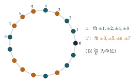

STEP II 1991，第 4 题
继续之前，请先阅读题目（原题为英文）。题目载于 STEP Support Programme 的题目资料库： step.maths.org/questions/91-s2-q4
引子
1796 年 3 月 30 日，哥廷根（Göttingen）一名十八岁的学生在他的数学日记写下了第一则记录，这本日记他此后写了一辈子。他发现了怎样用尺规作图（ruler and compasses construction）作出正 \(17\) 边形。古希腊人早已懂得作出边数为 \(3\)、\(4\)、\(5\) 和 \(15\) 的正多边形（regular polygon），以及边数为这些数目反复加倍的正多边形，但其后两千年间，再没有人添上任何一个新的。高斯（Carl Friedrich Gauss）后来说，正是这项发现令他决心成为数学家，而不是语文学家；相传他还曾要求在自己的墓碑上刻一个正 \(17\) 边形。
这个作图法的核心，就是本题的后半部分：四个特定余弦之和等于 \(\frac{\sqrt{17} - 1}{4}\)，这个数只涉及一个平方根。由平方根构成的长度都可以用尺规作出，而高斯再用三个同类的步骤，就能作出 \(\cos\frac{2\pi}{17}\) 本身。
动笔之前
为甚么一道关于正 \(17\) 边形的题目，第一部分却是关于 \(\cos\frac{2\pi}{5}\) 的？
那是热身，把同一个想法用在较小的多边形上。对正五边形（pentagon）而言，和 \(\cos\phi + \cos 2\phi\) 满足一条有理系数的二次方程（quadratic），所以解一条二次方程就能求出它。对正 \(17\) 边形而言，四个余弦之和 \(z\) 原来也满足一条二次方程。两种情况的窍门都是把余弦相乘，再用 \(\cos A\cos B = \frac12\bigl(\cos(A + B) + \cos(A - B)\bigr)\) 把乘积变回同一批角的余弦之和。
逐步解题
阶段 1 正五边形
展开 \(y^2 = (\cos\phi + \cos 2\phi)^2\)，把每个乘积化为和，再利用 \(5\phi = 2\pi\) 化简 \(3\phi\) 和 \(4\phi\) 这类角。
\[y^2 = \cos^2\phi + 2\cos\phi\cos2\phi + \cos^2 2\phi = \tfrac12(1 + \cos 2\phi) + (\cos 3\phi + \cos\phi) + \tfrac12(1 + \cos 4\phi).\] 由于 \(5\phi = 2\pi\)，有 \(\cos 3\phi = \cos(2\pi - 2\phi) = \cos 2\phi\) 和 \(\cos 4\phi = \cos\phi\)。所以 \[y^2 = 1 + \tfrac12(\cos\phi + \cos2\phi) + (\cos\phi + \cos 2\phi) = 1 + \tfrac32 y,\] 即 \(2y^2 = 3y + 2\)。■ 方程 \(2y^2 - 3y - 2 = (2y + 1)(y - 2) = 0\) 的根是 \(y = 2\) 和 \(y = -\frac12\)。但 \(y = 2\) 需要两个余弦都等于 \(1\)，而事实并非如此，所以 \(y = -\frac12\)。■
阶段 2 十七次单位根之和为零
\(\sum_{k=0}^{16}\cos k\theta\) 是 \(\sum_{k=0}^{16}\omega^k\) 的实部（real part），其中 \(\omega = e^{\mathrm{i}\theta}\) 是一个 \(17\) 次本原单位根（primitive root of unity）。这个等比级数（geometric series）等于 \(\frac{\omega^{17} - 1}{\omega - 1} = 0\)。■
所以 \(\sum_{k=1}^{16}\cos k\theta = -1\)。由于 \(\cos(17 - k)\theta = \cos k\theta\)，各项可以两两配对，于是 \[\sum_{k=1}^{8}\cos k\theta = -\tfrac12.\]
阶段 3 把余弦分成两组
设 \(z = \cos\theta + \cos2\theta + \cos4\theta + \cos8\theta\)，并设 \(z'\) 为其余四个余弦之和 \(\cos3\theta + \cos5\theta + \cos6\theta + \cos7\theta\)。\(z + z'\) 是多少？
由第 2 阶段，\(z + z' = -\frac12\)。如果还能求出 \(zz'\)，那么 \(z\) 和 \(z'\) 就是某条二次方程的两个根。
计算 \(zz'\)。把它展开成 \(16\) 个乘积 \(\cos a\theta\cos b\theta\)，把每个乘积化为两个余弦之和，然后数一数 \(\cos\theta, \cos2\theta, \ldots, \cos8\theta\) 各出现多少次。（利用 \(\cos k\theta = \cos(17 - k)\theta\) 和 \(\cos(-k\theta) = \cos k\theta\) 化简各角。）
每个乘积给出 \(\cos a\theta\cos b\theta = \frac12\bigl(\cos(a + b)\theta + \cos(a - b)\theta\bigr)\)，所以 \(zz'\) 是 \(32\) 个余弦之和的 \(\frac12\) 倍。逐一考虑 \(a \in \{1, 2, 4, 8\}\) 和 \(b \in \{3, 5, 6, 7\}\) 的 \(16\) 对组合：例如 \(a = 1\)、\(b = 3\) 给出 \(\cos4\theta\) 和 \(\cos2\theta\)；\(a = 8\)、\(b = 7\) 给出 \(\cos15\theta = \cos2\theta\) 和 \(\cos\theta\)。对全部十六对都这样做，\(\cos\theta, \ldots, \cos8\theta\) 每一个都恰好出现四次。因此 \[zz' = \tfrac12 \times 4 \times \sum_{k=1}^{8}\cos k\theta = 2 \times \left(-\tfrac12\right) = -1.\]
阶段 4 二次方程
所以 \(z\) 和 \(z'\) 是 \(t^2 + \frac12 t - 1 = 0\) 的两个根，即 \(4t^2 + 2t - 4 = 0\)，其根为 \(t = \frac{-1 \pm \sqrt{17}}{4}\)。哪一个是 \(z\)？按数值计算，\(\cos\theta \approx 0.932\)、\(\cos2\theta \approx 0.739\)、\(\cos4\theta \approx 0.092\) 和 \(\cos8\theta \approx -0.983\)，所以 \(z \approx 0.78 > 0\)。因此 \[z = \frac{-1 + \sqrt{17}}{4} = -\frac{1 - \sqrt{17}}{4}. \qed\]
回顾
积化和。余弦的积化和公式把 \(y^2\) 和 \(zz'\) 变成同一批余弦之和，于是代数运算得以自成一体。
和与积给出二次方程。知道 \(z + z'\) 和 \(zz'\)，就等于知道以 \(z\) 和 \(z'\) 为根的二次方程。
分组要分得对。把八个余弦分成 \(\{1, 2, 4, 8\}\) 和 \(\{3, 5, 6, 7\}\)，令每个指标在 \(zz'\) 中出现的次数相同。随意分组是行不通的。
背后的数学
为甚么是 \(\{1, 2, 4, 8\}\)？以 \(17\) 为模（modulo），\(3\) 的幂 \(3^0, 3^1, 3^2, \ldots\) 会走遍所有非零剩余（residue）： \[1, 3, 9, 10, 13, 5, 15, 11, 16, 14, 8, 7, 4, 12, 2, 6.\] 每隔一个取一个，即 \(3^0, 3^2, 3^4, \ldots\)，得出 \(1\)、\(9\)、\(13\)、\(15\)、\(16\)、\(8\)、\(4\)、\(2\)，以 \(17\) 为模就是 \(\pm1\)、\(\pm2\)、\(\pm4\)、\(\pm8\)：正好是 \(z\) 中的角。另一半给出 \(\pm3, \pm5, \pm6, \pm7\)，即 \(z'\) 中的角。高斯把 \(\omega^k\) 在这类剩余类上的和称为周期（periods）。由于 \(17 - 1 = 16 = 2^4\)，这些剩余可以对分四次，而在每一阶段，周期都满足一些二次方程，其系数涉及上一阶段的周期。四条二次方程，也就是四个平方根，就从有理数一路通往 \(\cos\frac{2\pi}{17}\)： \[\begin{gathered} \cos\tfrac{2\pi}{17} = \tfrac{1}{16}\Bigl(-1 + \sqrt{17} + \sqrt{34 - 2\sqrt{17}} \\ {} + 2\sqrt{17 + 3\sqrt{17} - \sqrt{34 - 2\sqrt{17}} - 2\sqrt{34 + 2\sqrt{17}}}\Bigr). \end{gathered}\] 每一步都只涉及平方根，而平方根可以用尺规作出（利用相似三角形或半圆），所以正 \(17\) 边形是可作图（constructible）的。

哪些正多边形可以作图？
高斯断言，而 Pierre Wantzel 在 1837 年证明：正 \(n\) 边形可以用尺规作出，当且仅当 \(n\) 是 \(2\) 的幂乘以若干个互不相同的费马质数（Fermat primes）之积，费马质数即形如 \(2^{2^m} + 1\) 的质数。已知的费马质数有 \(3\)、\(5\)、\(17\)、\(257\) 和 \(65537\)，它们是 第 1.1 节 中的费马数。（费马（Fermat）猜想所有这类数都是质数，但欧拉（Euler）证明了 \(2^{32} + 1\) 可被 \(641\) 整除，而此后再没有人找到其他费马质数。）所以正 \(257\) 边形和正 \(65537\) 边形都可以作图；十九世纪时，Johann Hermes 花了大约十年时间推算出正 \(65537\) 边形的作图法，他的手稿现存于哥廷根。正 \(7\) 边形和正 \(11\) 边形不可作图，因为 \(7\) 和 \(11\) 不是费马质数（\(7 - 1 = 6\) 和 \(11 - 1 = 10\) 都不是 \(2\) 的幂）；正 \(9\) 边形也不可作图，因为 \(9 = 3^2\) 把费马质数 \(3\) 重复了。Wantzel 的证明用到 第 6.3 节 中关于域次数（field degrees）的理论。
思维技巧
要求出一个量，可以为它配上一个自然的伙伴，计算两者的和与积，再解由此得出的二次方程。
个中的艺术在于选对伙伴，使和与积都算得出来。这里的伙伴来自以 \(17\) 为模的剩余的对称性，而把这个想法重复四次，就得出高斯的作图法。
延伸练习
正七边形（heptagon）。试做 STEP II 1995，第 6 题。这道题把高斯将单位根分组的想法用于七次单位根，并求出余弦之和与正弦之和的准确值。判断正弦之和的正负号是当中最微妙的一步。
正五边形。证明 \(\cos\frac{2\pi}{5} = \frac{\sqrt5 - 1}{4}\)，并由此描述一个正五边形的尺规作图法。
另一个周期。用数值验证 \(z' = \cos3\theta + \cos5\theta + \cos6\theta + \cos7\theta = \frac{-1 - \sqrt{17}}{4}\)。
生成元（generators）。证明以 \(17\) 为模时，\(3\) 的幂给出所有非零剩余，但 \(2\) 的幂却不然。\(2\) 的幂给出哪些剩余？
延伸阅读
Ian Stewart, Galois Theory（CRC Press）。当中有一章讲述尺规作图和正 \(17\) 边形。
Richard Courant & Herbert Robbins, What Is Mathematics?（Oxford University Press）。第 3 章以浅白优美的笔触介绍作图问题，包括正 \(17\) 边形。
Daniel Kehlmann, Measuring the World（Quercus）。一本关于高斯和洪堡（Alexander von Humboldt）的诙谐小说，可作轻松读物。